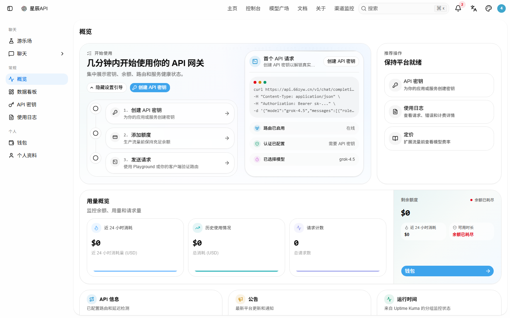
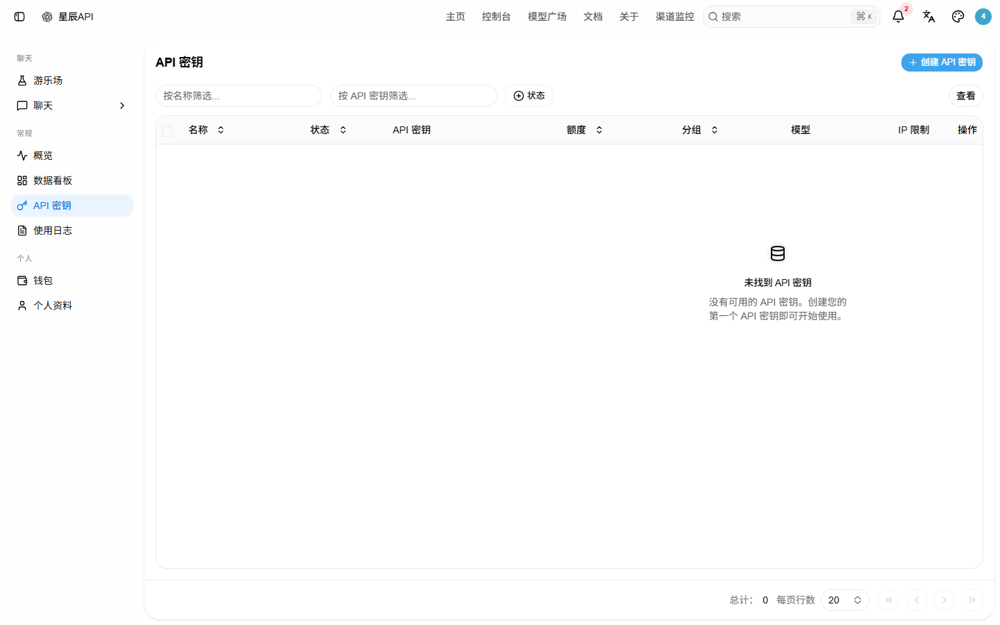
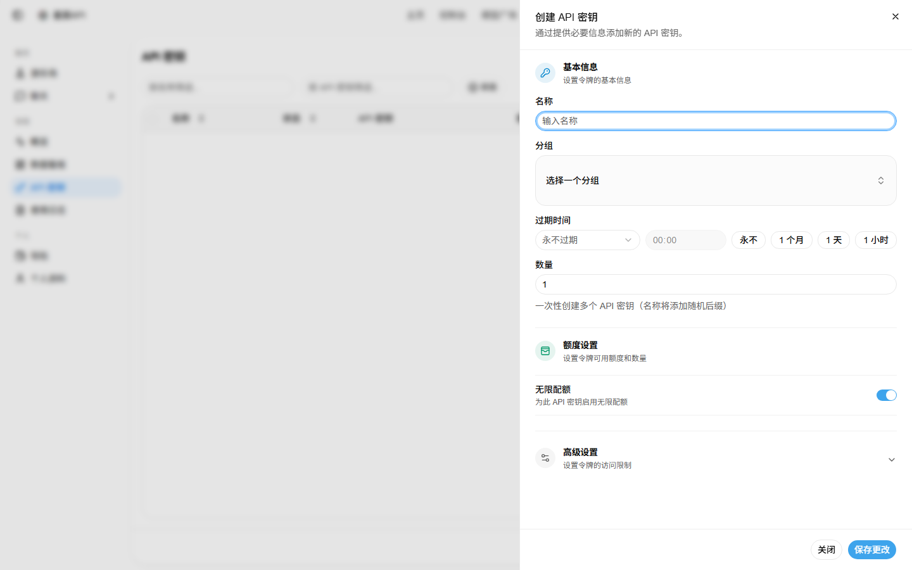
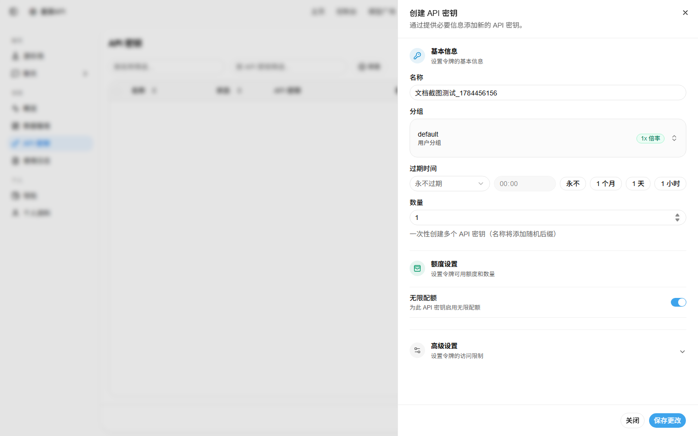
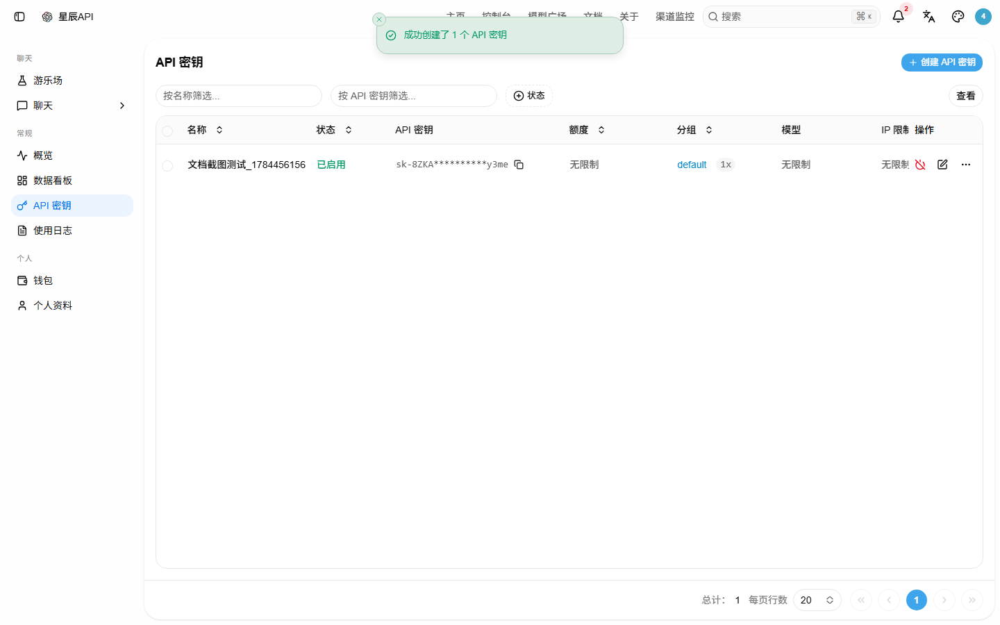
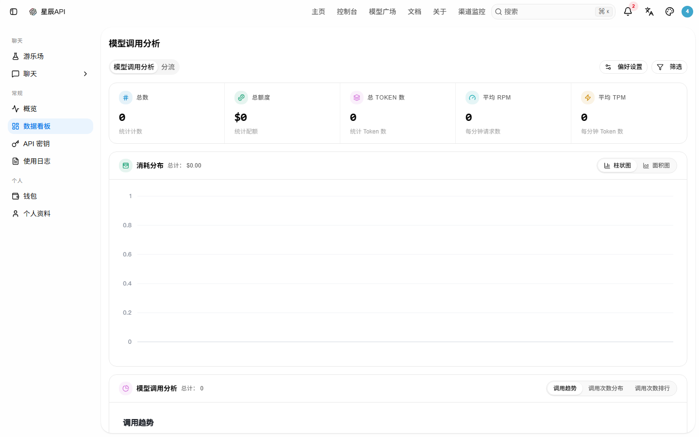
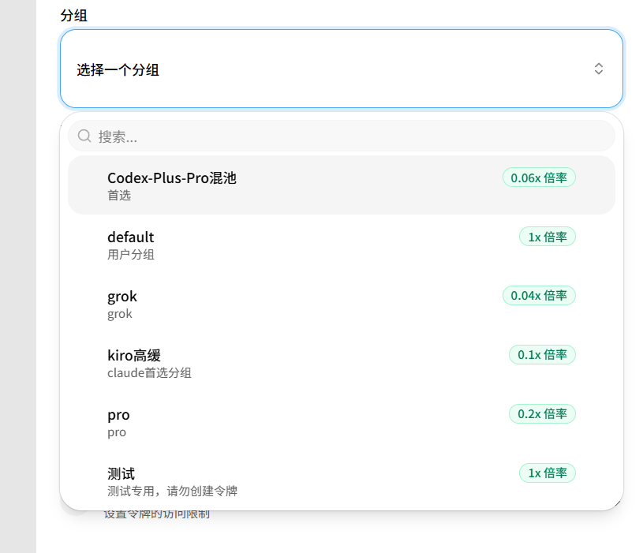
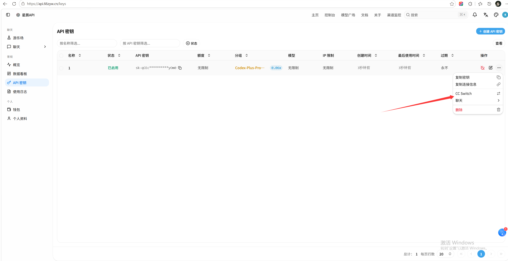
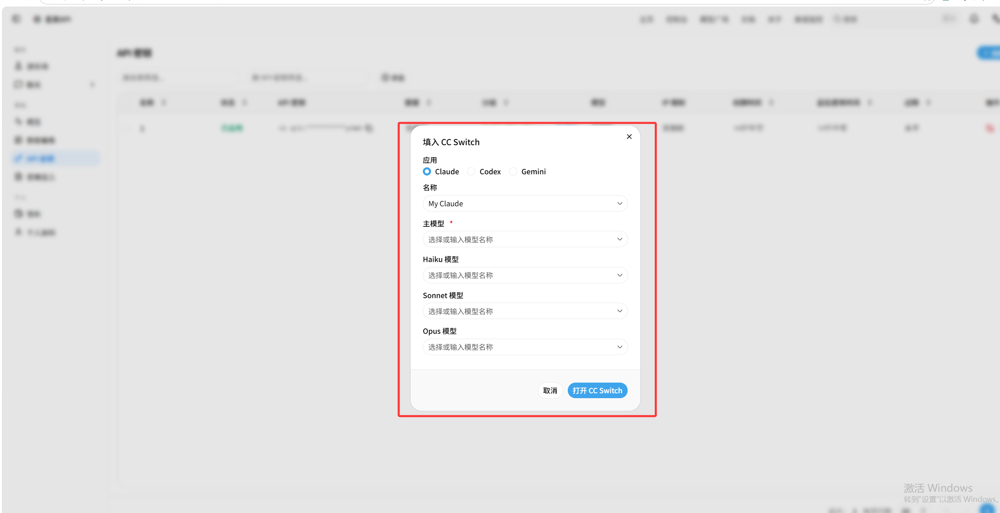

星辰 API（new-api）使用文档
本站在各类 AI 编程客户端（Claude Code / Codex / OpenCode 等）中调用模型的使用说明。
1. 服务概览
本站是 OpenAI API 与 Anthropic API 双兼容的中转网关，因此几乎所有主流 AI 客户端只需改两处：API Base URL 和 API Key，即可直接使用。
2. 获取 API Key
- 打开控制台：https://api.66zyw.cn
- 注册 / 登录账号。
- 进入 用户中心 → 令牌（API Key） 页面，点击「新建令牌 / 创建密钥」。
- 填写名称、额度上限（可选），在分组（Group）中选择你套餐对应的分组（见第 3 节）。
- 创建后会得到一串
sk-开头的密钥，请立即复制保存（只显示一次）。
⚠️ 令牌的分组决定它走哪条上游渠道与对应倍率。选错分组可能用不到你购买的额度或走错价位，请按你实际开通的分组选择。



default），然后点击「保存更改」。

sk- 密钥。

3. 可用模型与分组
3.1 模型名（请求时填到 model 字段）
Claude 系列
claude-opus-4-6claude-opus-4-7claude-sonnet-4-6claude-sonnet-5claude-fable-5
GPT / Codex 系列
gpt-5.4gpt-5.5gpt-5.6gpt-5.6-luna/gpt-5.6-sol/gpt-5.6-terra（混池变体）codex-auto-review
其他
grok-4.5
3.2 分组（Group，决定路由与倍率）
令牌可绑定的分组包括：default、pro、grok、Codex-Plus-Pro混池、kiro高缓、特惠gpt 等。不同分组对应不同的上游渠道与计费倍率，请按你的套餐选择对应分组。
组别与具体倍率以控制台实际显示为准。不确定时用哪个分组，先用 default 测试连通性，再切换到你的专属分组。

pro 0.2x、grok 0.04x、kiro高缓 0.1x 等）。按你购买的套餐选择对应分组即可。

4. 客户端配置
下面所有示例里的 sk-xxxxxx 都替换成你在第 2 节拿到的真实密钥。
4.1 MiMo Code 配置
MiMo Code 支持 OpenAI 兼容协议，在设置里选择「OpenAI 兼容」或「自定义端点」即可。
配置项：
- API Base URL：
https://api.66zyw.cn/v1 - API Key：
sk-xxxxxx - 模型：
gpt-5.6/claude-opus-4-7等（见 3.1）
方式 A：环境变量（若客户端支持）
export OPENAI_API_KEY="sk-xxxxxx"
export OPENAI_BASE_URL="https://api.66zyw.cn/v1"方式 B：图形界面设置
进入 MiMo Code → 设置 → 模型提供方 → 选择「OpenAI 兼容 / Custom OpenAI」，填入上述 Base URL 和 Key，并选择模型。
注意：MiMo Code 不同版本对自定义端点的字段名可能叫Base URL、API Host、Endpoint等，含义相同。
4.2 OpenCode 配置
OpenCode 走 OpenAI 兼容协议，配置 opencode.json 即可。
调用 GPT 系列（OpenAI 兼容提供方）：
{
"$schema": "https://opencode.ai/config.json",
"provider": {
"openai": {
"baseURL": "https://api.66zyw.cn/v1",
"apiKey": "sk-xxxxxx",
"models": [
{ "id": "gpt-5.6", "name": "GPT-5.6" },
{ "id": "gpt-5.5", "name": "GPT-5.5" }
]
}
}
}调用 Claude 系列（走 Anthropic 提供方，指向本站 /v1/messages）：
{
"$schema": "https://opencode.ai/config.json",
"provider": {
"anthropic": {
"baseURL": "https://api.66zyw.cn",
"apiKey": "sk-xxxxxx",
"models": [
{ "id": "claude-opus-4-7", "name": "Claude Opus 4.7" },
{ "id": "claude-sonnet-5", "name": "Claude Sonnet 5" }
]
}
}
}因为本站同时暴露 OpenAI 与 Anthropic 两种格式，Claude 模型用上面任一提供方配置都能跑通（Anthropic 提供方走/v1/messages，OpenAI 提供方走/v1/chat/completions）。
4.3 Claude Code 配置
Claude Code 原生使用 Anthropic 格式，直接指向本站即可。
方式 A：环境变量（推荐，最简单）
export ANTHROPIC_BASE_URL="https://api.66zyw.cn"
export ANTHROPIC_API_KEY="sk-xxxxxx"设置后直接运行 claude 即可。如需指定模型，可加：
export ANTHROPIC_MODEL="claude-opus-4-7"
# 或在 Claude Code 交互里用 /model 切换方式 B：写入 Claude Code 配置（settings.json）
{
"env": {
"ANTHROPIC_BASE_URL": "https://api.66zyw.cn",
"ANTHROPIC_API_KEY": "sk-xxxxxx"
}
}注意：Claude Code 默认模型名需本站支持（见 3.1）。若启动报模型不存在，用/model切到claude-opus-4-7/claude-sonnet-5等可用模型。ANTHROPIC_BASE_URL 不要带/v1，Claude Code 会自动补/v1/messages。
4.3.1 Claude Code + CC-Switch（图形化一键配置）
前置：先在本站中转后台创建 Claude Code 专用分组的令牌（见第 2 节），创建成功后会显示在 API 密钥列表中。
方式 A：控制台一键导入（推荐）
new-api 控制台已内置 CC-Switch 快捷入口，无需手动复制粘贴：
- 进入 API 密钥 列表，找到你创建的 Claude 分组令牌。
- 点击右侧「操作」列的 ⋯ 下拉菜单，选择 「CC Switch」。
- 在弹出的「填入 CC Switch」窗口中：
- 应用：选择
Claude（或 Codex / Gemini）。 - 名称：给这条配置起个名字（如
My Claude）。 - 主模型 / Haiku / Sonnet / Opus 模型：按需选择对应模型（见 3.1）。
- 应用：选择
- 点击 「打开 CC Switch」，系统会自动把密钥和端点写入 CC-Switch。
- ⚠️ 务必在 CC-Switch 的环境变量编辑区追加一行：
这是接入第三方中转 API 时最关键的缓存优化开关——不设的话，Claude Code 2.1.36+ 注入的动态归因标识会让约 6.8 万 tokens 的 system prompt 每次都缓存失败，实测费用暴涨约 10 倍、首包延迟从 2 秒变 17 秒。关闭后对功能无任何副作用。CLAUDE_CODE_ATTRIBUTION_HEADER=0 - 添加成功后主界面显示该分组，点右侧「启用」→ 显示「使用中」即完成。
- 点左上角「设置」→ 通用页下拉找到
跳过 Claude Code 初次安装确认，务必勾选。 - 终端运行
claude，能正常回复即配置完成。


方式 B：手动配置（备用）
如果一键导入不可用，也可以手动复制 API Key 到 CC-Switch：打开 CC-Switch → 分组条选 「Claude」 → 供应商分组选 「自定义配置」 → 粘贴 Key → 选择模型 → 在环境变量里追加 CLAUDE_CODE_ATTRIBUTION_HEADER=0。
Claude 系列分组选择建议（仅 Claude 相关）：
| 分组 | 倍率 | 适合场景 | 能否接 CC-Switch |
|---|---|---|---|
Kiro-Claude-高缓存 | x0.2 | Claude Code 日常主力，性价比最高 | ✅ 支持第三方接入 |
claude-awsq-满血 | x0.6 | 95% 高缓存，稳定与性价比兼顾 | ✅ 支持第三方接入 |
claude-max-满血 | x1（VIP x0.9 / Premium x0.8） | 官方满血 20x，最高稳定 | ❌ 仅供 Claude Code 工具调用，不可外接到 CC-Switch |
推荐顺序：日常先用Kiro-Claude-高缓存；长任务/缓存命中率要求高时切claude-awsq-满血；只在 Claude Code 工具内用最高档时切claude-max-满血。具体分组与倍率以控制台「模型广场」实时显示为准。
4.4 OpenAI Codex（codex CLI）配置
Codex 使用 OpenAI 兼容接口，Base URL 指向 /v1。
方式 A：配置文件 ~/.codex/config.toml
model = "gpt-5.6"
[model_providers.openai]
base_url = "https://api.66zyw.cn/v1"
api_key = "sk-xxxxxx"然后运行：codex（默认用上面配置的 gpt-5.6），或指定模型 codex --model gpt-5.5。
方式 B：环境变量
export OPENAI_API_KEY="sk-xxxxxx"
export OPENAI_BASE_URL="https://api.66zyw.cn/v1"
codex不同 Codex 版本的config.toml字段名可能略有差异（如base_url/baseUrl），以你本地codex --help与官方文档为准。环境变量的方式兼容性最好。
4.5 OpenClaw 配置
OpenClaw 是 OpenAI 兼容的 AI 编程助手，配置方式与 Cline 类似。
方式 A：设置界面
- Provider / API Provider：选择
OpenAI Compatible或Custom - Base URL：
https://api.66zyw.cn/v1 - API Key：
sk-xxxxxx - Model：
gpt-5.6或claude-opus-4-7
方式 B：配置文件（若支持）
{
"apiProvider": "openai-compatible",
"openAiCompatibleBaseUrl": "https://api.66zyw.cn/v1",
"openAiCompatibleApiKey": "sk-xxxxxx",
"model": "gpt-5.6"
}具体字段名以 OpenClaw 版本为准，核心是设置 OpenAI 兼容的 Base URL 与 Key。
4.6 Hermes Agent 配置
Hermes Agent 通常通过环境变量读取 OpenAI 兼容端点。
export OPENAI_API_KEY="sk-xxxxxx"
export OPENAI_BASE_URL="https://api.66zyw.cn/v1"
export OPENAI_MODEL="gpt-5.6"
# 若 Hermes 支持模型名独立变量，如 HERMES_MODEL，也请一并设置然后运行 hermes 或 hermes-agent 相关命令即可。
若 Hermes 使用配置文件（如 ~/.hermes/config.yaml）：
llm:
provider: openai
base_url: https://api.66zyw.cn/v1
api_key: sk-xxxxxx
model: gpt-5.6具体字段名（base_url/baseUrl/api_host）请参照 Hermes 版本文档。
4.7 Kilo Code 配置
Kilo Code 支持 OpenAI 兼容协议，配置方式与主流 VS Code AI 插件类似。
VS Code 设置（settings.json）：
{
"kiloCode.provider": "openai-compatible",
"kiloCode.openAiCompatible.baseUrl": "https://api.66zyw.cn/v1",
"kiloCode.openAiCompatible.apiKey": "sk-xxxxxx",
"kiloCode.model": "gpt-5.6"
}或在 Kilo Code 插件面板中：
- 打开 Kilo Code 侧边栏 → 设置
- Provider 选择
OpenAI Compatible/Custom - Base URL 填
https://api.66zyw.cn/v1 - API Key 填
sk-xxxxxx - Model 选择或手动输入
gpt-5.6
字段名可能因版本不同而叫baseUrl、base_url、apiHost等，请按实际界面填写。
4.8 Cherry Studio 配置
Cherry Studio 是桌面端多模型客户端，支持自定义 OpenAI 兼容服务商。
- 打开 Cherry Studio → 设置（Settings）→ 模型服务商（Models / Providers）
- 点击「添加服务商」或「OpenAI 兼容」
- 填写：
- 名称：星辰 API（任意）
- API 地址 / Base URL：
https://api.66zyw.cn/v1 - API 密钥 / API Key：
sk-xxxxxx
- 保存后，在模型列表中添加自定义模型：
gpt-5.6、claude-opus-4-7、grok-4.5、其他见 3.1 - 新建对话时选择该服务商下的模型即可。
Cherry Studio 通常要求模型 ID 与服务端一致，直接填写 3.1 中的模型名即可。
4.9 Qwen Code 配置
Qwen Code（通义灵码等阿里系 AI 编程工具）支持接入自定义 OpenAI 兼容模型。
IDE 插件设置：
- 打开 Qwen Code 插件 → 设置 → 模型配置 / 自定义模型
- 选择「OpenAI 兼容」或「自定义 Endpoint」
- 填写：
- Base URL：
https://api.66zyw.cn/v1 - API Key：
sk-xxxxxx - 模型：
gpt-5.6/claude-opus-4-7
- Base URL：
环境变量方式（若支持）：
export OPENAI_API_KEY="sk-xxxxxx"
export OPENAI_API_BASE="https://api.66zyw.cn/v1"
export OPENAI_MODEL="gpt-5.6"不同版本入口可能叫「自定义模型」、「私有模型」、「第三方模型」，找到 OpenAI 兼容入口即可。
4.10 CodeBuddy 配置
CodeBuddy（即 WorkBuddy 的 Code 能力）接入本站时，走 OpenAI 兼容协议。
方式 A：环境变量
export OPENAI_API_KEY="sk-xxxxxx"
export OPENAI_BASE_URL="https://api.66zyw.cn/v1"方式 B：配置文件（如 opencode.json 或 CodeBuddy 设置文件）
{
"provider": {
"openai": {
"baseURL": "https://api.66zyw.cn/v1",
"apiKey": "sk-xxxxxx",
"models": [
{ "id": "gpt-5.6", "name": "GPT-5.6" },
{ "id": "claude-opus-4-7", "name": "Claude Opus 4.7" }
]
}
}
}CodeBuddy 内部可能同时支持 OpenAI 与 Anthropic 两种格式，Claude 模型也可以按 Anthropic 方式配置：baseURL=https://api.66zyw.cn（不带/v1），apiKey=sk-xxxxxx。
4.11 Cline 配置
Cline（VS Code 插件）支持 OpenAI 兼容 provider，通过 VS Code 设置或 UI 配置。
方式 A：VS Code settings.json
{
"cline.provider": "openai-compatible",
"cline.openAiCompatible.baseUrl": "https://api.66zyw.cn/v1",
"cline.openAiCompatible.apiKey": "sk-xxxxxx",
"cline.model": "gpt-5.6"
}方式 B：Cline 侧边栏 UI
- 打开 Cline 扩展面板
- 点击设置（齿轮 / Settings）
- API Provider 选择
OpenAI Compatible - Base URL 填：
https://api.66zyw.cn/v1 - API Key 填：
sk-xxxxxx - Model ID 填：
gpt-5.6或claude-opus-4-7
Cline 不同版本字段名可能为baseUrl/base_url/apiHost，请按实际版本填写。若 Cline 支持 Anthropic provider，也可按 Claude Code 的方式配置（Base URL 不带/v1）。
4.12 其他 OpenAI 兼容客户端（通用配方）
只要客户端支持「自定义 OpenAI Base URL」，套用下面这个通用配方即可：
- Base URL：
https://api.66zyw.cn/v1 - API Key：
sk-xxxxxx - 模型名：填 3.1 中的任意一个
| 客户端 | 配置位置 |
|---|---|
| Cursor | Settings → Models → Override OpenAI Base URL = https://api.66zyw.cn/v1，填入 Key |
| Roo Code（VS Code 插件） | provider 选 OpenAI Compatible，Base URL = https://api.66zyw.cn/v1，填 Key |
| Aider | export OPENAI_API_KEY=sk-xxxxxx; export OPENAI_API_BASE=https://api.66zyw.cn/v1，再 aider --model gpt-5.6 |
| Continue（VS Code/JetBrains 插件） | config.json 里加一个 openai provider，baseURL: "https://api.66zyw.cn/v1" |
| Silicon / 各类前端 | 选择「自定义 / OpenAI 格式」，Base URL 同上 |
5. 连通性测试（curl）
OpenAI 格式：
curl https://api.66zyw.cn/v1/chat/completions \
-H "Authorization: Bearer sk-xxxxxx" \
-H "Content-Type: application/json" \
-d '{
"model": "gpt-5.6",
"messages": [{"role": "user", "content": "用一句话介绍你自己"}]
}'Anthropic 格式（Claude）：
curl https://api.66zyw.cn/v1/messages \
-H "Authorization: Bearer sk-xxxxxx" \
-H "Content-Type: application/json" \
-H "anthropic-version: 2023-06-01" \
-d '{
"model": "claude-opus-4-7",
"max_tokens": 200,
"messages": [{"role": "user", "content": "用一句话介绍你自己"}]
}'返回正常 JSON 即说明密钥与地址都正确。
6. 常见问题
Q1：提示 401 Unauthorized
密钥不对或未填；检查 sk- 前缀是否完整，是否被复制时多了空格。
Q2：提示模型不存在（model not found）
使用的模型名不在第 3.1 列表里。请改用本站支持的模型名。
Q3：Claude Code / 任何 Anthropic provider 报连接错误
确认设的是 ANTHROPIC_BASE_URL=https://api.66zyw.cn（不带 /v1，客户端会自动补 /v1/messages），而不是 /v1。
Q4：Codex / OpenCode / MiMo Code / OpenClaw / Hermes Agent / Kilo Code / Cherry Studio / Qwen Code / CodeBuddy / Cline 等走 OpenAI 兼容协议的客户端报连接错误
确认 Base URL 是 https://api.66zyw.cn/v1（带 /v1）。
Q5：计费/倍率看哪里
在控制台「用量 / 账单」查看令牌消耗；具体倍率取决于令牌绑定的分组。
7. 注意事项
- 🔒 密钥保密：
sk-密钥等同于你的账号额度，请勿公开到仓库、贴吧或前端代码。 - 💡 先小流量测试：新客户端首次使用，先用一次 curl 或单条请求验证连通，再正式投入工作流。
- 📊 关注用量：令牌可在控制台设置额度上限，避免意外超额。
- 🔄 客户端版本差异：各客户端配置项名称会随版本变化，本文给出的是当前主流写法；如字段名不符，以对应客户端
help/ 官方文档为准。 - 🌐 分组选择：令牌创建时选择的分组决定走哪条上游与倍率，请与实际套餐一致。